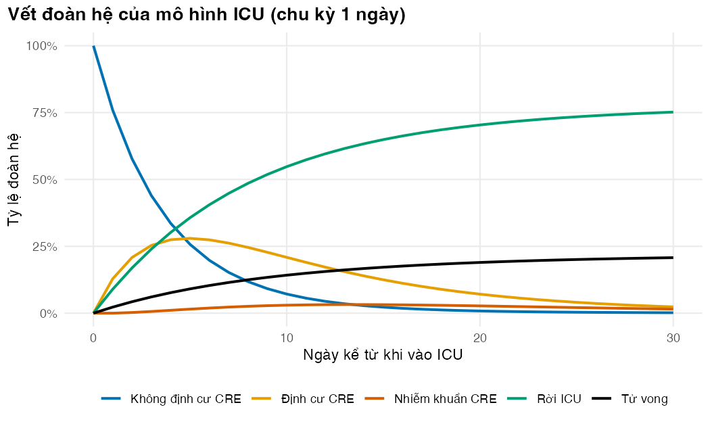

Từ vectơ kết quả kháng sinh đồ đến vết đoàn hệ: phép nhân ma trận là động cơ của mô hình Markov
Vì sao bạn nên quan tâm?
Người bệnh nằm ICU người lớn ở Việt Nam có tuổi trung vị 61 (Phu và c.s. 2016); theo bảng sống WHO, một người 61 tuổi ngoài cộng đồng có khoảng 1 trên 27,000 khả năng tử vong trong một ngày (World Health Organization 2026). Ở bệnh viện, người nhiễm Enterobacterales nhạy carbapenem tử vong thô 20.2% sau trung bình 8.9 ngày nằm viện (Larsson và c.s. 2025); mô hình của module lấy số này làm xấp xỉ cho ICU, tức khoảng 1 trên 44 mỗi ngày, cao gấp khoảng 620 lần ngoài cộng đồng (người bệnh nặng hơn nhiều, nên chỉ so để thấy cỡ độ lớn). Mỗi ngày đó còn tốn tiền giường ICU 1,017,300 VNĐ (Bộ Y tế 2024), bằng 25 bát phở loại 40,000 VNĐ một bát ở Hà Nội năm 2025 (Nhadautu.vn 2025). Muốn biết sau 30 ngày còn bao nhiêu người nằm ICU, bao nhiêu người đã mang CRE và khoa cần bao nhiêu ngày giường, bạn chỉ cần nhân một vectơ với một ma trận nhiều lần. Bài này dạy phép nhân đó, động cơ của mọi mô hình Markov trong khóa học.
Mục tiêu học tập
Sau bài này, bạn có thể:
Tạo vectơ và danh sách (list), lấy phần tử theo vị trí, theo tên và theo điều kiện logic, và tránh lỗi $ tự khớp tên viết tắt.
Dựng một ma trận chuyển trạng thái có tên hàng và cột, rồi kiểm tra tính hợp lệ của nó.
Phân biệt phép nhân từng phần tử * với phép nhân ma trận %*%, và dùng %*% để chuyển đoàn hệ qua một chu kỳ.
Tính vết đoàn hệ bằng vòng lặp và kiểm tra rằng đoàn hệ được bảo toàn.
Dùng mảng 3 chiều cho dữ liệu đếm và cho ma trận chuyển thay đổi theo thời gian.
Ý chính
Vectơ là đơn vị cơ bản của R: một dãy phần tử cùng kiểu. Phép toán trên vectơ được thực hiện theo từng phần tử.
Có bốn cách lấy phần tử: theo vị trí, bỏ theo vị trí (số âm), theo tên, và theo điều kiện logic. Lấy theo tên an toàn nhất cho mô hình.
Trung bình của một vectơ logic là một tỷ lệ. mean(x == "R", na.rm = TRUE) là tỷ lệ đề kháng.
Ma trận chuyển (transition matrix) có hàng là trạng thái xuất phát, cột là trạng thái đích. Mọi phần tử nằm trong [0, 1] và mỗi hàng cộng lại bằng 1.
Phép nhân ma trậns %*% P đưa phân bố đoàn hệ sang chu kỳ kế tiếp. Lặp lại phép nhân này sinh ra vết đoàn hệ (Markov trace).
Phép * nhân từng phần tử, không phải phép nhân ma trận. Đây là lỗi không báo phổ biến nhất.
Danh sách (list) chứa tham số và kết quả của mô hình. [[ ]] khớp tên chính xác; $ có thể âm thầm khớp một tên viết tắt.
Mảng (array) 3 chiều lưu một ma trận cho mỗi chu kỳ khi xác suất thay đổi theo thời gian.
Nội dung
Vectơ và kiểu dữ liệu
Kết quả meropenem của mọi chủng K. pneumoniae là một vectơ ký tự gồm các giá trị "S", "I", "R" và NA (chưa thử nghiệm). Một vectơ chỉ chứa một kiểu. Nếu trộn số với chữ, R âm thầm đổi tất cả sang chữ, gọi là ép kiểu (coercion). So sánh x == "R" tạo ra một vectơ logic; R coi TRUE là 1 và FALSE là 0, nên sum() đếm số chủng đề kháng còn mean() cho tỷ lệ đề kháng.
Phép toán số học trên hai vectơ được thực hiện theo từng cặp phần tử. Nếu hai vectơ dài khác nhau, vectơ ngắn được lặp lại cho đủ độ dài (recycling). Khi độ dài không chia hết cho nhau, R chỉ đưa ra cảnh báo chứ không dừng. Trong mô hình, hãy coi cảnh báo này là lỗi.
Danh sách (list)
Vectơ chỉ chứa một kiểu. Danh sách (list) chứa các phần tử có kiểu và độ dài khác nhau, và là cấu trúc dữ liệu chính của khóa học. read_params() trả về một danh sách có tên: mỗi phần tử là một tham số, còn bảng đầy đủ được gắn vào đối tượng như một thuộc tính (attribute) tên "table". Kết quả của một hàm mô hình cũng là danh sách; ví dụ icu_outcomes() trả về vết đoàn hệ, số ngày nằm ICU, chi phí và tỷ lệ tử vong.
Có ba cách lấy phần tử. q[["p_u_c"]] trả về chính phần tử đó. q["p_u_c"] trả về một danh sách con dài 1. q$p_u_c là cách viết ngắn của [[ ]] với tên cố định. Cái bẫy nằm ở $: nó chấp nhận cả tên viết tắt, nên q$outbreak_r âm thầm trả về outbreak_rr mà không báo lỗi. Vì vậy script nào của khóa học cũng bật options(warnPartialMatchDollar = TRUE) để biến lỗi này thành cảnh báo. [[ ]] luôn khớp chính xác.
Ma trận chuyển
Mô hình ICU của module theo dõi một đoàn hệ người bệnh vào khoa hồi sức tích cực (ICU) khi chưa định cư Enterobacterales kháng carbapenem (CRE). Mỗi ngày, người bệnh nằm ở một trong năm trạng thái: không định cư (U), định cư CRE (C), nhiễm khuẩn CRE (I), rời ICU (X), tử vong (D). X và D là trạng thái hấp thụ (absorbing state): đã vào thì không ra. Các xác suất mỗi ngày được suy ra từ các nghiên cứu đã công bố, phần lớn ở Việt Nam (xem trang tổng quan của module, nơi nêu rõ chỗ nào chỉ là xấp xỉ; Bài 1 tính lại một xác suất từ số liệu gốc).
stateDiagram-v2 direction LR U --> C: mắc mới C --> U: hết định cư C --> I: nhiễm khuẩn I --> C: khỏi nhiễm khuẩn U --> X C --> X I --> X U --> D C --> D I --> D
stateDiagram-v2
direction LR
U --> C: mắc mới
C --> U: hết định cư
C --> I: nhiễm khuẩn
I --> C: khỏi nhiễm khuẩn
U --> X
C --> X
I --> X
U --> D
C --> D
I --> D
Ma trận chuyển \(P\) có phần tử \(P_{ij}\) là xác suất đang ở trạng thái \(i\) hôm nay và ở trạng thái \(j\) ngày mai. Xác suất ở lại trên đường chéo được tính bằng 1 trừ tổng xác suất rời đi. Nhờ vậy, mỗi hàng luôn cộng lại bằng 1. Ở mô hình này, các xác suất hằng ngày được cho trực tiếp. Cách suy ra chúng từ tỷ suất và nguy cơ cạnh tranh (competing risks) được dạy ở M02 Bài 2.
Phép nhân ma trận là động cơ của mô hình Markov
Gọi \(s_t\) là vectơ hàng chứa tỷ lệ đoàn hệ ở mỗi trạng thái vào ngày \(t\). Một ngày sau:
Công thức chỉ nói một điều: số người ở trạng thái \(j\) ngày mai bằng tổng các dòng chảy từ mọi trạng thái \(i\) vào \(j\). Lặp lại \(n\) lần ta có \(s_n = s_0 P^n\). Khi \(P\) không đổi theo thời gian, đây là một mô hình Markov đoàn hệ thời gian đồng nhất (Sonnenberg và Beck 1993; Briggs và Sculpher 1998). Ghép các vectơ \(s_0, s_1, \dots, s_n\) thành các hàng của một ma trận, ta được vết đoàn hệ. Mọi chi phí và kết cục của mô hình đều tính từ vết này (Bài 3; M02 Bài 3). Một quy ước cần nói rõ: chi phí và số ngày nằm ICU của ngày \(d\) tính theo trạng thái ở đầu ngày (các hàng \(0, \dots, n-1\) của vết); Bài 3 so sánh với cách đếm cuối ngày và nửa chu kỳ.
Trong R, %*% là phép nhân ma trận còn * là phép nhân từng phần tử. s0 * P vẫn chạy: nó nhân hàng \(i\) của \(P\) với \(s_{0,i}\) và cho ra ma trận 5×5 của dòng chảy (bao nhiêu người đi từ \(i\) sang \(j\)). Cộng từng cột của ma trận dòng chảy mới ra \(s_1\). Lỗi là nhầm nó với phân bố của ngày kế tiếp. Nếu s0 là ma trận 1×5 thay vì vectơ, * dừng với thông báo kích thước không tương thích. Kiểm tra kích thước kết quả là cách nhanh nhất để bắt lỗi này.
Mảng: khi một ma trận không đủ
Ma trận có hai chiều; mảng (array) có thể có ba chiều hoặc hơn. Bài này dùng mảng theo hai cách. Thứ nhất, table() với ba biến cho ra mảng đếm loài × năm × kết quả, và apply() cộng theo một chiều bất kỳ. Thứ hai, khi xác suất thay đổi theo thời gian, ta lưu một ma trận cho mỗi ngày trong mảng P[từ, đến, ngày]. Ví dụ ở đây là một đợt bùng phát CRE trong khoa, với hệ số nhân và khoảng thời gian là giá trị minh họa: xác suất mắc mới tăng 2 lần từ ngày 10 đến ngày 20. Quy ước chỉ số: P_arr[, , t] đưa đoàn hệ từ ngày \(t-1\) sang ngày \(t\), nên đợt bùng phát đổi các bước chuyển từ ngày 9 sang 10, và cứ thế đến bước từ ngày 19 sang 20. Lệch một đơn vị là lỗi kinh điển, sẽ gặp lại với trạng thái đường hầm ở M02 Bài 4. Cách biểu diễn bằng mảng nhiều chiều còn lưu được cả dòng chuyển giữa các trạng thái, không chỉ số người ở mỗi trạng thái (Krijkamp và c.s. 2020). M02 Bài 4 dùng mảng 3 chiều cho tử vong theo tuổi.
Thực hành
Nạp hàm, tham số của mô hình ICU (gồm cả giá ngày giường và giá thuốc từ bảng giá dùng chung, qua load_icu_params()) và bộ dữ liệu mô phỏng.
if (!isTRUE(l10n_info()[["UTF-8"]])) invisible(Sys.setlocale("LC_CTYPE", "en_US.UTF-8"))source("../_shared/R/helpers.R")source("../_shared/R/vn_data.R")source("code/model.R")options(warnPartialMatchDollar =TRUE) # `$` that silently matches a shortened name now warnslibrary(ggplot2)p_sim <-read_params("params/amr_sim.csv")q <-load_icu_params() # params/icu_markov.csv + the shared ICU bed-day and drug pricesiso <-simulate_isolates(p_sim, seed =2025)
Lấy kết quả meropenem của K. pneumoniae thành một vectơ, đếm theo giá trị, rồi tính tỷ lệ đề kháng từ vectơ logic. Kiểm tra: table() có cột <NA> cho các chủng chưa thử nghiệm. Ba dòng cuối minh họa ép kiểu.
# A character vector: meropenem results of K. pneumoniae isolatesmem_kpn <- iso$MEM[iso$organism =="K. pneumoniae"]length(mem_kpn)
[1] 924
head(mem_kpn, 8)
[1] "S" "S" "S" "S" "S" "S" "S" "S"
table(mem_kpn, useNA ="ifany")
mem_kpn
I R S <NA>
26 386 495 17
# A logical vector: TRUE counts as 1, FALSE as 0is_r <- mem_kpn =="R"c(n_resistant =sum(is_r, na.rm =TRUE), share =mean(is_r, na.rm =TRUE))
n_resistant share
386.0000000 0.4255788
# Coercion: one vector holds one type onlyclass(c(1, 2, 3)); class(c(1, "R")); class(c(TRUE, 2))
[1] "numeric"
[1] "character"
[1] "numeric"
Tỷ lệ đề kháng là 42.6% trên 907 chủng có kết quả. Đây là tỷ lệ trên mọi chủng, kể cả chủng lặp lại; Bài 4 sẽ loại chúng.
Một vectơ có tên chứa ba xác suất rời trạng thái U mỗi ngày. Ta thử cả bốn cách lấy phần tử. Kiểm tra: xác suất ở lại phải bằng 1 trừ tổng ba xác suất rời đi.
# A named numeric vector: daily exits from state U (not colonised)exits_u <-c(C = q$p_u_c, X = q$p_u_x, D = q$p_u_d)exits_u
C X D
0.1288 0.0897 0.0227
exits_u["X"] # by name
X
0.0897
exits_u[c(1, 3)] # by position
C D
0.1288 0.0227
exits_u[-1] # drop the first element
X D
0.0897 0.0227
exits_u[exits_u >0.05] # by a logical condition
C X
0.1288 0.0897
stay_u <-1-sum(exits_u)stay_u
[1] 0.7588
Mỗi ngày, 75.9% người ở trạng thái U vẫn ở lại U.
Danh sách: q là một danh sách, nên ta xem cấu trúc của nó, thử ba cách lấy phần tử, rồi cố ý gõ một tên viết tắt. Kiểm tra: q[["p_u_c"]] là một số còn q["p_u_c"] là danh sách con; q$outbreak_r tạo ra cảnh báo khớp một phần, và [[ ]] trả về NULL thay vì khớp nhầm.
# A list holds elements of different types and lengths. read_params() returns a named list.class(q)
[1] "list"
length(q)
[1] 18
head(names(q), 4)
[1] "n_days" "p_u_c" "p_u_x" "p_u_d"
str(q[1:3]) # structure of the first three elements
List of 3
$ n_days: num 30
$ p_u_c : num 0.129
$ p_u_x : num 0.0897
q[["p_u_c"]] # [[ ]]: the element itself (a number)
[1] 0.1288
q["p_u_c"] # [ ]: a sub-list of length 1
$p_u_c
[1] 0.1288
q$p_u_c # $: shorthand for [[ ]] with a literal name
[1] 0.1288
attr(q, "table")$label_vi[1:2] # an attribute: extra information attached to the object
[1] "Số ngày theo dõi (số chu kỳ)"
[2] "Xác suất mắc mới CRE (không định cư -> định cư) mỗi ngày"
# A model function returns several results in one listres_icu <-icu_outcomes(q)names(res_icu)
# Danger: `$` also accepts a shortened name. There is no parameter called "outbreak_r"# but q$outbreak_r would silently return outbreak_rr; the option set above turns it into a warningmsg_partial <-tryCatch(q$outbreak_r, warning =function(w) conditionMessage(w))msg_partial
[1] "partial match of 'outbreak_r' to 'outbreak_rr'"
stopifnot(is.null(q[["outbreak_r"]])) # [[ ]] matches exactly: no silent match
Thông báo cảnh báo là: partial match of ‘outbreak_r’ to ‘outbreak_rr’.
Quy tắc lặp lại vectơ ngắn hoạt động âm thầm khi độ dài chia hết, và chỉ cảnh báo khi không chia hết. Kiểm tra: dòng thứ hai trả về nội dung cảnh báo chứ không phải lỗi.
# Element-wise arithmetic; the shorter vector is recycledc(1, 2, 3, 4) *c(10, 100)
[1] 10 200 30 400
# Lengths that do not divide each other give only a warning, not an errortryCatch(c(1, 2, 3) +c(10, 100), warning =function(w) conditionMessage(w))
[1] "longer object length is not a multiple of shorter object length"
Dựng ma trận chuyển bằng tay: tạo ma trận toàn số 0 có tên hàng và cột, điền xác suất rời đi theo tên, rồi tính đường chéo. Kiểm tra: rowSums(P) đều bằng 1, check_tm() không báo lỗi, và ma trận trùng khớp với build_icu_P() trong code/model.R.
U C I X D
U 0.759 0.129 0.000 0.090 0.023
C 0.009 0.859 0.020 0.090 0.023
I 0.000 0.049 0.904 0.016 0.030
X 0.000 0.000 0.000 1.000 0.000
D 0.000 0.000 0.000 0.000 1.000
rowSums(P)
U C I X D
1 1 1 1 1
check_tm(P) # 0 <= p <= 1, rows sum to 1stopifnot(isTRUE(all.equal(P, build_icu_P(q)))) # same as the function in model.R
Lấy phần tử của ma trận theo tên hàng và cột. Lấy một cột thì R tự rút gọn thành vectơ; thêm drop = FALSE để giữ dạng ma trận. Kiểm tra: P["C", "I"] bằng 0.0197, đúng giá trị của p_c_i trong CSV.
P["C", "I"] # one cell: colonised -> infected
[1] 0.0197
P["C", ] # one row: where the colonised go tomorrow
U C I X D
0.0088 0.8591 0.0197 0.0897 0.0227
P[c("U", "C"), "D"] # part of a column
U C
0.0227 0.0227
dim(P[, "D", drop =FALSE]) # keep the matrix shape
[1] 5 1
Chuyển đoàn hệ qua một ngày bằng %*%. Ta kiểm tra một cột bằng công thức tổng ở trên, so sánh với phép * (ma trận dòng chảy), rồi xác nhận rằng nhân hai lần với \(P\) cũng là nhân một lần với \(P^2\). Kiểm tra: dim(s0 * P) là 5×5, không phải 1×5; cộng từng cột của nó cho lại đúng \(s_1\); và phép * với ma trận 1×5 báo lỗi.
s0 <-c(U =1, C =0, I =0, X =0, D =0) # everyone admitted without CREs1 <- s0 %*% P # distribution after one dayround(s1, 4)
U C I X D
[1,] 0.7588 0.1288 0 0.0897 0.0227
# Column j of s1 is sum_i s0[i] * P[i, j]; check for column "C"stopifnot(abs(s1[, "C"] -sum(s0 * P[, "C"])) <1e-12)# '*' is element-wise: s0 * P multiplies row i of P by s0[i]. The result is the 5 x 5 matrix of# FLOWS (how many move from i to j), not the distribution of the next dayflows <- s0 * Pdim(flows)
[1] 5 5
# Adding up the flows into each state gives s1: the matrix product does this in one stepstopifnot(isTRUE(all.equal(unname(colSums(flows)), as.vector(s1))))# With a 1 x 5 matrix instead of a plain vector, '*' refuses to runtryCatch(matrix(s0, nrow =1) * P, error =function(e) conditionMessage(e))
[1] "non-conformable arrays"
# Two days: (s0 P) P = s0 (P P)s2 <- s1 %*% Pstopifnot(isTRUE(all.equal(s2, s0 %*% (P %*% P))))
Vết đoàn hệ 30 ngày tính bằng vòng lặp for: mỗi hàng là hàng trước nhân với \(P\). Kiểm tra: mỗi hàng cộng lại bằng 1, tỷ lệ tử vong không bao giờ giảm, kết quả trùng với cohort_trace() và với \(s_0 P^{n}\) khi \(n\) = 30.
U C I X D
0 1.0000 0.0000 0.0000 0.0000 0.0000
1 0.7588 0.1288 0.0000 0.0897 0.0227
7 0.1524 0.2620 0.0228 0.4481 0.1148
14 0.0280 0.1393 0.0321 0.6335 0.1671
30 0.0017 0.0236 0.0153 0.7518 0.2075
check_trace(trace) # rows sum to 1, nothing negativestopifnot(all(diff(trace[, "D"]) >=0)) # the dead never come backstopifnot(isTRUE(all.equal(trace, cohort_trace(P, s0, n_days))))# Matrix power: P^30 by repeated multiplication gives the same last rowP30 <-diag(5)for (t in1:n_days) P30 <- P30 %*% Pstopifnot(isTRUE(all.equal(as.vector(s0 %*% P30), as.vector(trace[n_days +1, ]))))in_icu_30 <-sum(trace[n_days +1, c("U", "C", "I")])dead_30 <- trace[n_days +1, "D"]
Sau 30 ngày, 4.1% đoàn hệ còn ở ICU và 20.8% đã tử vong.
Vẽ vết đoàn hệ. Cú pháp ggplot2 được giải thích ở Bài 5; ở đây chỉ cần nhìn hình dạng các đường.
plot_df <-data.frame(day =rep(0:n_days, times =5),state =factor(rep(ICU_LABELS[ICU_STATES], each = n_days +1), levels = ICU_LABELS),share =as.vector(trace))fig_trace <-ggplot(plot_df, aes(day, share, colour = state)) +geom_line(linewidth =0.9) +scale_colour_manual(values = pal_course[c(1, 4, 2, 3, 8)], name =NULL) +scale_y_continuous(labels =function(x) paste0(100* x, "%")) +labs(x ="Ngày kể từ khi vào ICU", y ="Tỷ lệ đoàn hệ",title ="Vết đoàn hệ của mô hình ICU (chu kỳ 1 ngày)") +theme_course()save_fig(fig_trace, "l02-trace.png", width =7, height =4.2)

Vết đoàn hệ của mô hình ICU: tỷ lệ đoàn hệ ở mỗi trạng thái theo ngày
Mảng 3 chiều từ dữ liệu: đếm chủng theo loài × năm × kết quả meropenem. Lấy một “lát” ([, , "R"]) cho ma trận số chủng đề kháng; dùng apply() để cộng theo chiều thứ ba ra số chủng có kết quả. Kiểm tra: dim(tab3) là 3 × 5 × 3. Tỷ lệ này tính trên mọi chủng, chưa loại chủng lặp lại (Bài 4 sẽ sửa).
# A 3-D array from data: organism x year x meropenem result (counts)tab3 <-table(organism = iso$organism, year = iso$year, MEM = iso$MEM)dim(tab3)
[1] 3 5 3
tab3[, , "R"] # one slice: resistant counts, organism x year
year
organism 2021 2022 2023 2024 2025
A. baumannii 152 134 132 153 174
E. coli 58 56 56 60 50
K. pneumoniae 77 75 85 74 75
tab3["A. baumannii", "2024", ] # one "fibre": all results for one organism-year
I R S
0 153 43
tested <-apply(tab3, c(1, 2), sum) # sum over the 3rd dimension (S + I + R)round(tab3[, , "R"] / tested, 3) # proportion resistant, all isolates (not deduplicated)
year
organism 2021 2022 2023 2024 2025
A. baumannii 0.676 0.667 0.742 0.781 0.760
E. coli 0.142 0.130 0.132 0.153 0.125
K. pneumoniae 0.377 0.405 0.445 0.411 0.510
Mảng 3 chiều cho ma trận chuyển thay đổi theo ngày, theo quy ước chỉ số vừa nêu. Trong đợt bùng phát, xác suất mắc mới tăng và xác suất ở lại giảm tương ứng. Kiểm tra: mọi lát P_arr[, , t] đều hợp lệ, và đợt bùng phát phải làm tăng số ngày nhiễm khuẩn.
# A time-varying model stores one matrix per day: P_arr[from, to, day].# Index convention: P_arr[, , t] moves the cohort from the trace row of day t - 1 to the# row of day t, so an outbreak on "days 10-20" changes the steps 9 -> 10, ..., 19 -> 20.P_arr <-array(P, dim =c(5, 5, n_days), dimnames =list(ICU_STATES, ICU_STATES, 1:n_days))outbreak_days <- q$outbreak_start:q$outbreak_endfor (t in outbreak_days) { P_arr["U", "C", t] <- q$outbreak_rr * q$p_u_c P_arr["U", "U", t] <-1-sum(P_arr["U", c("C", "X", "D"), t])}for (t in1:n_days) check_tm(P_arr[, , t])trace_ob <- tracefor (t in1:n_days) trace_ob[t +1, ] <- trace_ob[t, ] %*% P_arr[, , t]check_trace(trace_ob)infected_days <-c(base =sum(trace[1:n_days, "I"]), outbreak =sum(trace_ob[1:n_days, "I"]))round(infected_days, 4)
Số ngày nhiễm khuẩn kỳ vọng cho mỗi người vào ICU trong 30 ngày đầu tăng từ 0.656 lên 0.676 ngày.
Mẹo thực hành
Luôn đặt dimnames cho ma trận chuyển rồi điền giá trị theo tên (P["C", "I"]), không theo vị trí (P[2, 3]). Thêm hoặc đổi thứ tự trạng thái sẽ không làm sai mô hình.
Viết check_tm(P) ngay sau khi dựng ma trận và check_trace(trace) ngay sau khi chạy vết. Hai dòng kiểm tra hợp lý (sanity check) này bắt được phần lớn lỗi nhập xác suất.
Cấp phát trước (preallocation) ma trận vết bằng matrix(0, n + 1, k) rồi điền từng hàng, thay vì nối thêm hàng bằng rbind() trong vòng lặp (xem Bài 3).
Dùng dim() và str() thường xuyên. Phần lớn lỗi về ma trận là lỗi kích thước.
Lỗi thường gặp
Dùng * thay cho %*%. Kết quả vẫn ra số, nhưng đó là ma trận dòng chảy chứ không phải phân bố của ngày kế tiếp. Kiểm tra: phân bố sau một chu kỳ phải có kích thước 1 × số trạng thái và cộng lại bằng 1.
Quên na.rm = TRUE.mean(x == "R") trả về NA khi có chủng chưa thử nghiệm. Ngược lại, nếu thay NA bằng "S", mẫu số sẽ sai.
Đặt ma trận theo cột trong khi tưởng là theo hàng.matrix(x, 5, 5) điền theo cột; cần byrow = TRUE nếu nhập theo hàng. Điền theo tên tránh được lỗi này.
Lát mảng mất chiều.P_arr[1, , 5] là vectơ, không còn là ma trận. Thêm drop = FALSE khi cần giữ chiều.
Bài tập
Bài tập 1 (dễ). Trong các chủng A. baumannii, bao nhiêu phần trăm đề kháng cả gentamicin và meropenem? Dùng phép “và” logic & trên hai vectơ.
Lời giải
& so sánh từng cặp phần tử, nhưng cách nó xử lý NA dễ gây hiểu nhầm: NA & FALSE là FALSE, còn NA & TRUE mới là NA. Vì vậy na.rm = TRUE sau & vẫn giữ lại những chủng có một kết quả thiếu và một kết quả S; chúng vào mẫu số như “không kháng cả hai” dù ta chưa biết. Cách đúng là giữ các chủng có đủ cả hai kết quả trước khi tính. Tỷ lệ dưới đây tính trên mọi chủng, kể cả chủng lặp lại.
# Exercise 1: share of A. baumannii isolates resistant to BOTH gentamicin and meropenem# (all isolates, repeats included; Lesson 4 removes the repeats)aba <- iso[iso$organism =="A. baumannii", ]# How & treats NA: NA & FALSE is FALSE, NA & TRUE is NA, NA | TRUE is TRUEc(NA&FALSE, NA&TRUE, NA|TRUE)
[1] FALSE NA TRUE
# Correct: keep isolates with BOTH results first, then combinetested <-!is.na(aba$GEN) &!is.na(aba$MEM)both_r <- aba$GEN[tested] =="R"& aba$MEM[tested] =="R"c(n =sum(tested), share_both =mean(both_r))
n share_both
1002.0000000 0.5708583
# The shortcut with na.rm = TRUE keeps isolates with one missing result and one S result# in the denominator (NA & FALSE is FALSE), so its denominator is too largeboth_naive <- aba$GEN =="R"& aba$MEM =="R"n_naive <-sum(!is.na(both_naive))share_naive <-mean(both_naive, na.rm =TRUE)c(n_naive = n_naive, share_naive = share_naive)
n_naive share_naive
1009.0000000 0.5668979
stopifnot(sum(tested) < n_naive)
Cách đúng cho 57.1% trên 1,002 chủng có đủ hai kết quả. Cách tắt dùng na.rm = TRUE cho 56.7% trên 1,009 chủng: mẫu số lớn hơn 7 chủng vì giữ lại những chủng thiếu một kết quả.
Bài tập 2 (vừa). Chạy mô hình cho một đoàn hệ vào ICU khi đã định cư CRE. Sau 30 ngày, tỷ lệ tử vong và tỷ lệ còn ở ICU là bao nhiêu? So sánh với đoàn hệ chưa định cư.
Lời giải
Chỉ cần đổi vectơ khởi đầu. Ma trận chuyển giữ nguyên.
# Exercise 2: a cohort admitted already colonised. Share dead and still in ICU at day 30?s0_c <-c(U =0, C =1, I =0, X =0, D =0)tr_c <-cohort_trace(P, s0_c, n_days)round(c(dead = tr_c[n_days +1, "D"], in_icu =sum(tr_c[n_days +1, c("U", "C", "I")])), 4)
dead in_icu
0.2205 0.0484
Bài tập 3 (khó hơn). Chạy mô hình cơ sở trong 365 ngày. Đoàn hệ cuối cùng nằm ở đâu? Vì sao hai trạng thái hấp thụ phải cộng lại gần bằng 1?
Lời giải
Mọi người cuối cùng đều rời ICU hoặc tử vong vì U, C và I đều có xác suất rời đi dương mỗi ngày. Kiểm tra stopifnot() xác nhận tổng X + D vượt 0.999.
# Exercise 3: run the base model for 365 days. Where does everyone end up?tr_365 <-cohort_trace(P, s0, 365)round(tr_365["365", ], 4)
Krijkamp, Eline M., Fernando Alarid-Escudero, Eva A. Enns, Petros Pechlivanoglou, M. G. Myriam Hunink, Alan Yang, và Hawre J. Jalal. 2020. “A multidimensional array representation of state-transition model dynamics”. Medical Decision Making 40 (2): 242–48. https://doi.org/10.1177/0272989X19893973.
Larsson, M., L. V. N. Truong, T. D. Nguyen, T. N. Do, và c.s. 2025. “Burden of carbapenem-resistant Gram-negative bacterial infections in Vietnam: a national hospital survey”. Journal of Hospital Infection 165: 189–98. https://doi.org/10.1016/j.jhin.2025.03.019.
Phu, Vu Dinh, Heiman F. L. Wertheim, Mattias Larsson, Behzad Nadjm, Quynh-Dao Dinh, Lennart E. Nilsson, và c.s. 2016. “Burden of hospital acquired infections and antimicrobial use in Vietnamese adult intensive care units”. PLoS ONE 11 (1): e0147544. https://doi.org/10.1371/journal.pone.0147544.
Sonnenberg, F. A., và J. R. Beck. 1993. “Markov models in medical decision making: a practical guide”. Medical Decision Making 13 (4): 322–38. https://doi.org/10.1177/0272989X9301300409.
World Health Organization. 2026. “Global Health Observatory: life tables by country, Viet Nam, 2023 (indicators LIFE_0000000029 nMx, LIFE_0000000030 nqx, LIFE_0000000035 ex)”. 2026. https://ghoapi.azureedge.net/api/LIFE_0000000029.
Kịch bản video (~14 phút)
#
Slide
Lời giảng chính
Hình/Code
1
Vectơ và danh sách
Một kiểu dữ liệu; ép kiểu âm thầm; vectơ logic → tỷ lệ; [[ ]] và $
l02-vectors, l02-lists
2
Bốn cách lấy phần tử
Vị trí, số âm, tên, điều kiện; ưu tiên tên
l02-indexing
3
Recycling
Âm thầm khi chia hết; chỉ cảnh báo khi không chia hết
l02-recycling
4
Mô hình ICU
Năm trạng thái, hai trạng thái hấp thụ; xác suất từ nghiên cứu ở Việt Nam; tử vong mỗi ngày gấp hàng trăm lần ngoài cộng đồng
Sơ đồ Mermaid, hộp mở đầu
5
Dựng ma trận chuyển
Điền theo tên; đường chéo = 1 − rời đi; check_tm()